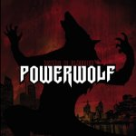

|
|
||
Powerwolf : Return in Bloodred (2005) |
|

http://www.powerwolf.net |
1. Mr. Sinister 4:39 |
7.2/10 |
|
Powerwolf es una banda alemana con cantante Rumano, Attila Dorn, que ha puesto a la venta un CD repleto de heavy metal clásico lento, incluso cercano en algunos momentos al hard rock, pero con una atmósfera bastante siniestra. Attila Dorn tiene una voz clara y potente que perfeccionó durante sus estudios de canto clásico, y es uno de los elementos más llamativos de la banda. Tuve ocasión de verles en directo hace unos meses, de gira con Gamma Ray, y su estética también llamaba la atención: todos de riguroso negro, y Attila envuelto en una capa negra con el forro rojo, estilo Drácula de serie B. Por otra parte, aunque salieron a media tarde, estuvieron sólo media hora y no les conocía casi nadie, lograron una actuación bastante decente, con algunos momentos intensos, y Attila estuvo muy bien tanto en su voz como consiguiendo que el público se involucrara en el concierto. El disco empieza con unos lúgubres aullidos de lobos y unas inquietantes notas de sintetizador en "Mr. Sinister", aunque pronto las guitarras forman una densa base rítmica, lenta pero definida y muy marcada, que se despeja en el facilón pero pegadizo estribillo. "We came to take your souls" empieza con la potente voz de Attila acompañada sólo por los teclados, aunque pronto las guitarras tejen una maraña de distorsión sobre la que Attila no tiene problemas para destacar la voz, y en la que algunos coros gritados rompen un poco la monotonía de las letras. "Kiss of the cobra king" es un tema más rápido, más melódico y con un estribillo simple pero pegadizo, acompañado de unos coros tipo "uoooh oooooh" de esos que se meten para que el público los pueda gritar en los conciertos. "Black mass hysteria" es una canción difícil de definir, bastante lenta, de estribillo minimalista pero con más coros "uoooh oooooh", y que muestra una guitarra solista más protagonista. "Demons and diamonds" es otro medio tiempo, donde la guitarra solista también tiene sus momentos estelares, pero que quizás queda más cercano al hard rock que al heavy metal, salvo por los coros "uoooh ooooh" del final que quizás sean algo más metaleros, aunque empiecen a resultar excesivos. En "Montecore" encontramos una sencilla base rítmica bien adornada por la segunda guitarra, y coronada por algunos coros un poco más elaborados que en el resto del disco, aunque tampoco nos libramos de la parte de "uoooh ooooh". "The Evil made me do it" es una pieza siniestra, lenta y con una parte central que te pone los pelos de punta. La canción más épica del disco es "Lucifer in starlight", con una atmósfera cercana al doom metal, que yo encuentro demasiado lenta, y una llamativa parte instrumental. "Son of the morning star" completa este álbum debut, con una voz femenina de acompañamiento para un tema con pocas ideas que podría haberse quedado en un outro de dos minutos. Este disco es difícil de clasificar. ¿Es heavy metal clásico? ¿gótico? ¿doom? ¿un poco de todos los anteriores?. Probablemente sea más bien esto último, y quizá eso sea lo mejor: una fusión de géneros interesante y razonablemente original, pero que quizás se ha quedado demasiado pegada al lado menos cañero del heavy metal. Y para que un disco tan lento pueda ser buen heavy metal necesita más pegada que éste. Además en cuanto a las letras la orientación ha sido demasiado comercial, los estribillos son minimalistas y provocan que los títulos de las canciones se repitan demasiadas veces, y los "uoooh oooooh" acaban resultando excesivos. Un disco interesante por su original aproximación al heavy metal, que empieza bien pero que yo creo que no termina de cuajar. |
||
- Crítica escrita por Rubén Béjar - |
||